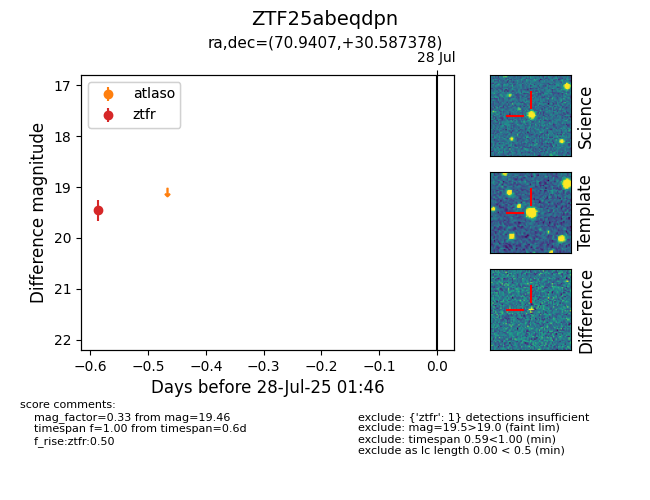

Target ZTF25abeqdpn at 2025-07-28 01:46, see:
FINK: fink-portal.org/ZTF25abeqdpn
Lasair: lasair-ztf.lsst.ac.uk/objects/ZTF25abeqdpn
ALeRCE: alerce.online/object/ZTF25abeqdpn
alt names
ZTF25abeqdpn (ztf,fink)
coordinates:
equatorial (ra, dec) = (70.9407,+30.58738)
galactic (l, b) = (170.8241,-9.96509)
photometry
last ztfr=19.46
1 ztfr detections
